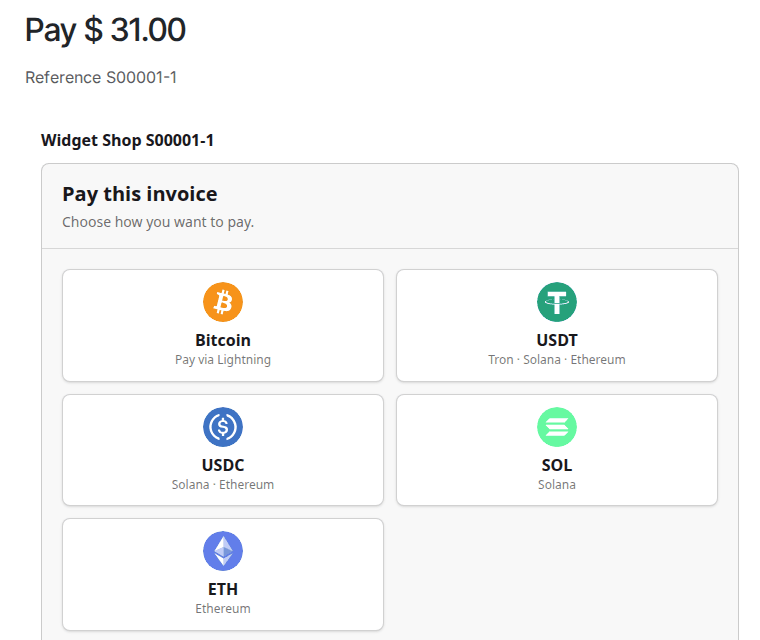
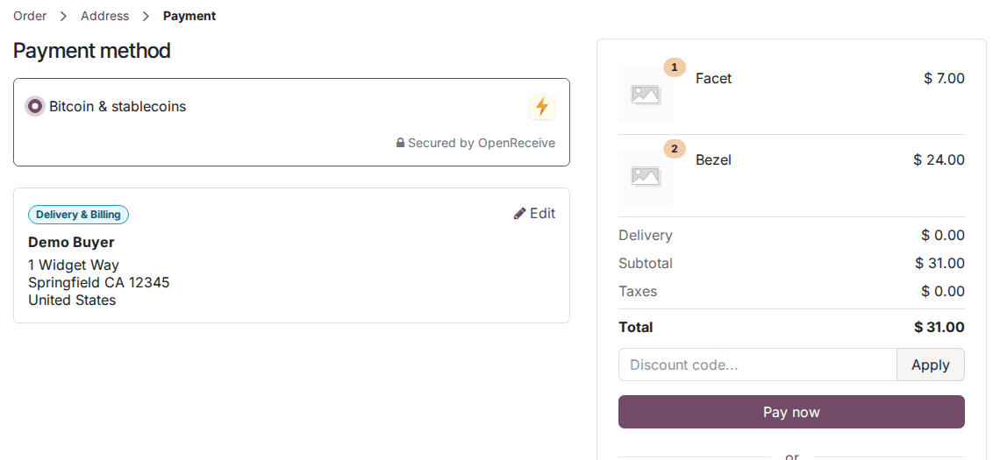
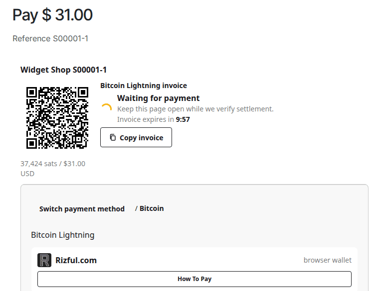
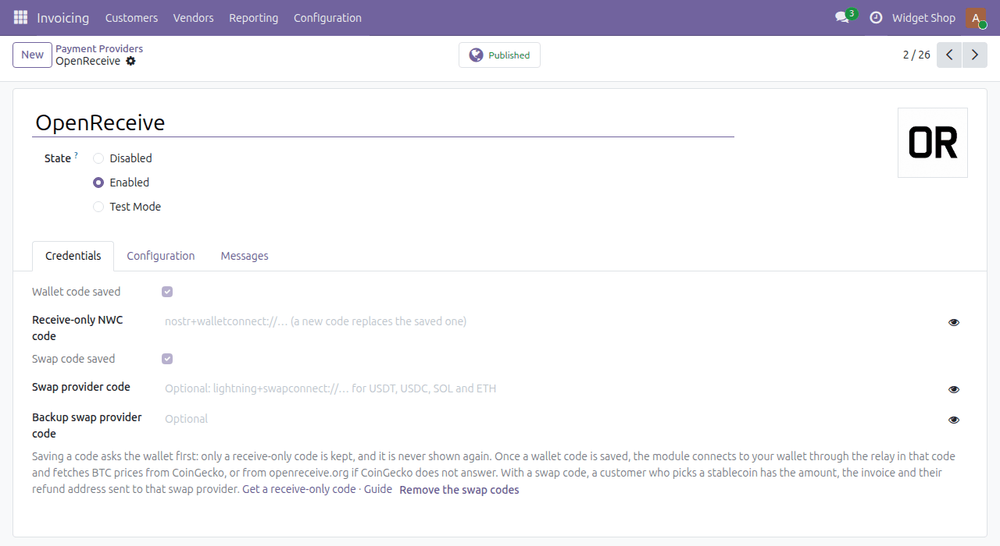

A payment provider for Odoo's shop and invoices. Customers pay a Lightning invoice on a checkout page of your own site, and Odoo confirms the order or marks the invoice paid, as with any other provider.


Odoo's own payment step. With a swap code saved, the method reads "Bitcoin & stablecoins".

The checkout page on your own site, with the Lightning invoice.
odoo openreceive configure,
doctor, test-invoice and reconcile.openreceive Python package at the module's version:
pip install openreceive==0.4.34odoo openreceive doctor -d <database>
and odoo openreceive test-invoice --new -d <database>.The full guide, with Docker and Odoo.sh steps: openreceive.org/guides/quickstart-odoo

The provider form: it says only whether each code is saved, never the code.
The module sends no telemetry. Until you save a wallet code, it contacts no outside service on its own. After that, it connects to:
The checkout page lists wallets, exchanges and swap services, and links swap transactions to public block explorers. These are ordinary links: the checkout never contacts those sites, and all its icons are bundled with the module.
On Odoo 19 and Odoo 20 from their official Docker images with PostgreSQL 17: install, configuration from the form and from a terminal, the doctor, and a signed-in customer ordering in the shop and paying by Lightning and by USDT on Solana, after which the sale order is confirmed. Not tested yet: Odoo.sh, paying from an invoice's payment link, and multi-company databases.
Questions and bug reports: GitHub issues in the OpenReceive/openreceive repository, or info@openreceive.org. The source code is MIT-licensed and public in the same repository.